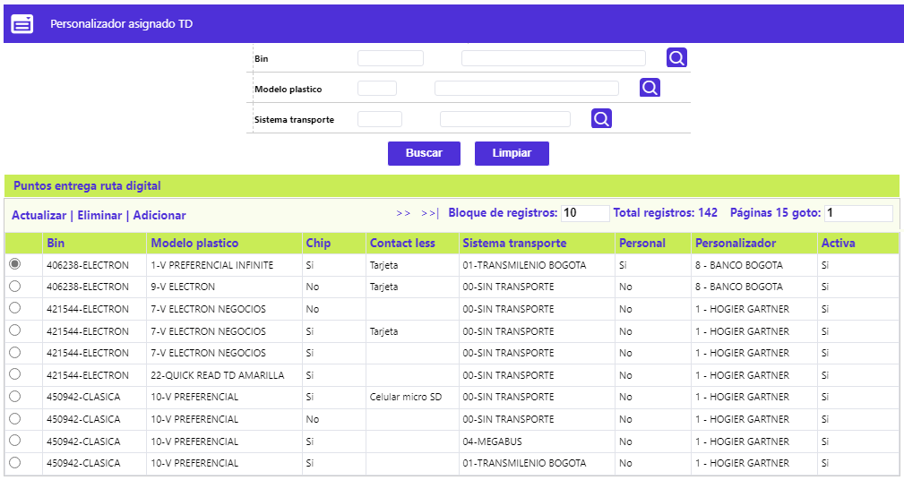
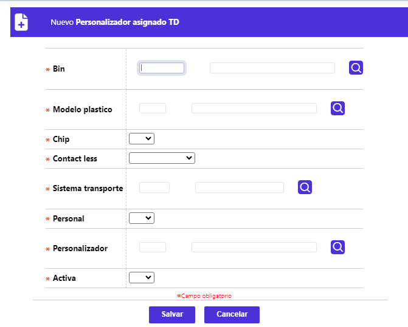
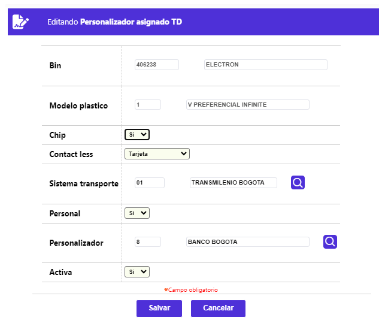
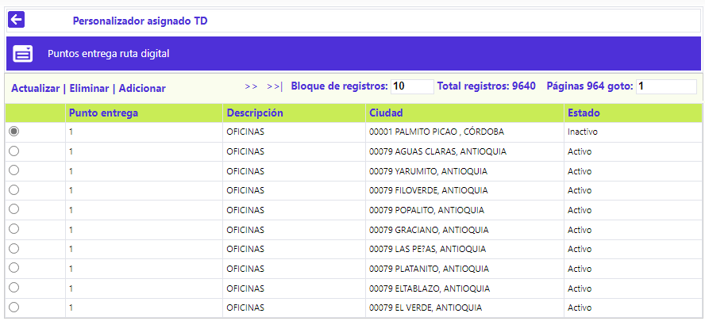
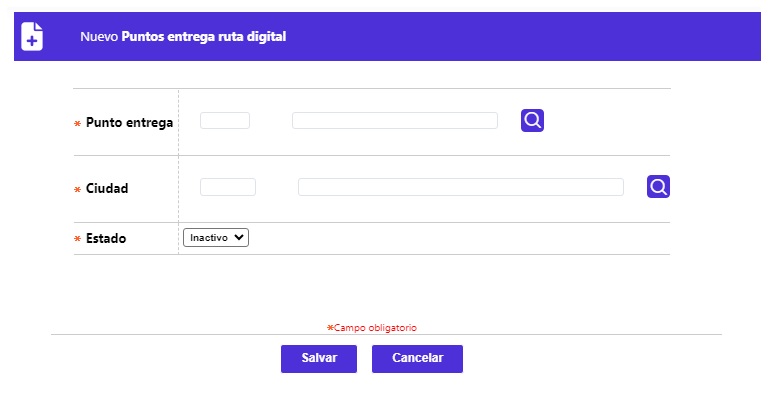

Personalizador asignado TD
Esta función habilita la consulta y mantenimiento de la estructura que, permite definir el responsable de la personalización de los plásticos, para que los tarjetahabientes propietarios de los mismos, puedan utilizarlos como medio de pago en el sistema de transporte masivo disponible en la ciudad de residencia. El formulario dispone de un filtro para consultar los datos, además, los enlaces: Puntos entrega ruta digital, Actualizar, Eliminar y Adicionar.

Adicionar: Al activar ese enlace se despliega un formulario con los siguientes campos:

Descripción Campos
|
Bin |
Campo numérico obligatorio, en el que debe seleccionarse de la lista de valores adjunta, el Bank Identification Number BIN o prefijo del producto para el que se va a definir el personalizador de los plásticos de dicho producto, poblada en la opción Definición de bines y filtrada por Tipo de bin: Electron y Débito. |
|
Modelo plástico |
Campo numérico obligatorio, en el que debe seleccionarse de la lista de valores adjunta, el modelo de plástico correspondiente, asociado al Bin para el cual se está definiendo o, eventualmente, modificando los datos, la cual se pobla en la opción Modelos plástico. |
|
Chip |
Campo que posee lista de valores de la que debe seleccionarse entre Si o No, el Bin para el que se va a definir el personalizador de los plásticos, corresponde a una tarjeta con dicha tecnología. |
|
Contactless |
Campo que posee lista de valores, de la que debe seleccionarse entre: Tarjeta, Celular micro SD o Celular simcard, el dispositivo en el que se habilita dicha funcionalidad. |
|
Sistema transporte |
Campo numérico en el que se puede digitar el código del sistema de transporte para el que se habilita el dispositivo Contact less, o con lista de valores de la que se debe seleccionar dicho sistema. |
|
Personal |
Campo que posee lista de valores de la que debe seleccionarse entre Si o No, el Bin para el que se va a definir el personalizador de los plásticos, corresponde a una tarjeta personal o empresarial. |
|
Personalizador |
Campo numérico en el que se puede digitar el código del Proveedor, filtrado por aquellos que ofrecen realce. |
|
Activa |
Campo que posee lista de valores de la que debe seleccionarse entre Si o No, el Bin para el que se va a definir el personalizador de los plásticos, corresponde a una tarjeta personal o empresarial. |
Actualizar: Al activar ese enlace se despliega un formulario en el cual, los dos únicos campos no modificables son Bin y Modelo plástico:

Puntos entrega ruta digital: A través de esta funcionalidad, la entidad puede vincular un punto de entrega con una ciudad, e incluso, definir si dicho punto está activo o no. El formulario disponde de los enlaces Actualizar, Eliminar y Adicionar:

Adicionar (- Puntos entrega ruta digital): Al activar ese enlace se despliega un formulario con los siguientes campos:

Descripción De Campos
|
Punto entrega |
Campo numérico de una posición, obligatorio, en el que puede registrarse o seleccionarse de la lista de valores poblada en Puntos de entrega de la que debe seleccionarse aquel punto a definir o, eventualmente, modificar. |
|
Ciudad |
Campo obligatorio que posee lista de valores poblada a través de la opción Entidades territoriales de la que debe seleccionarse el código correspondiente. |
|
Estado |
Campo que posee lista de valores, con el valor Inactivo por defecto, y pudiendo tener valor Activo, de la que debe seleccionarse aquel que corresponda a la condición del punto de entrega a definir o, eventualmente, modificar. |
Actualizar (- Puntos entrega ruta digital): Al activar ese enlace se despliega un formulario en el cual, el único campo modificable es Estado: